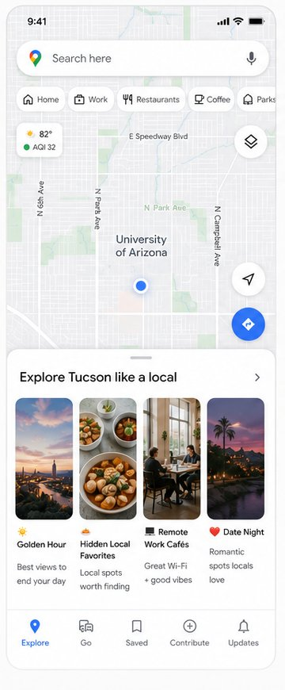
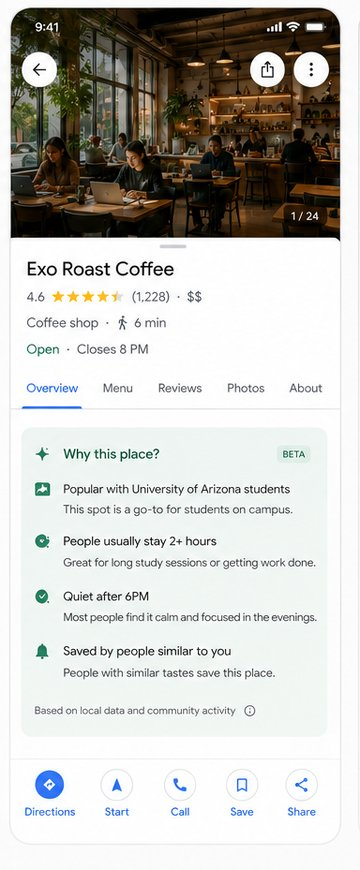

A concept for making Maps an exploration companion, bringing social discovery, ideas for the occasion, and practical planning into one place.
Maps already supports conversational search and personalized recommendations. But finding inspiration on social media and checking the practical details in Maps can still mean switching apps. This concept brings those steps closer together.
Show places trending on social media within category searches, alongside moment-based collections and clear reasons to visit. Optional taste profiles help make suggestions more relevant.
Well-executed personalization typically increases engagement 60% (FT Strategies). That's what this concept is centered on, improving user experience and filling the main gap that exists within Maps.
Finding a nearby restaurant is only part of the decision. Before choosing one, I want to know whether it fits the evening I have in mind: somewhere quiet enough to talk, casual enough to stay a while, and within my budget.
A video, a local discussion, or a friend's saved list can help me picture the experience. But, I still have to check the location, hours, and route in Maps. The work of deciding is spread across those sources.
One has 30 minutes before a flight. The other wants a long catch-up with a friend. They need different places, even if they fall in the same category.
Trending spots can offer inspiration, while collections and place details help each person decide what fits the occasion.
The opportunity is to help people discover, decide, and get there without piecing the plan together across apps.
Hypothesis. Bringing social discovery into Maps could help people find inspiration and choose a place without switching apps.
Research method. Reviewed discovery experiences across Google Maps, TikTok, Instagram, Reddit, Airbnb Experiences, Yelp, and Apple Maps. Interview questions focused on real decisions: when was the last time you spent 10+ minutes deciding where to eat, how do you actually find restaurants while traveling, what makes you skip Maps entirely.
See places gaining attention on social media when you search a category. Check what is drawing people there, then save the spot or get directions without switching apps.
Group places around what someone wants to do, such as date night or a slow Sunday morning, alongside familiar categories like coffee and restaurants.
Alongside ratings, explain what a place is known for and why it fits the occasion. Trending suggestions show the source and date of the attention, so popularity is not mistaken for quality.
Profiles support the experience rather than define it. People can optionally share interests and communities to make suggestions more relevant. Trending places and moment-based collections remain available without a profile.
How profile signals work: If Jordan chooses the UA community, adds late-night food to his interests, and opts to share saves, those saves can contribute to suggestions for people who select similar preferences. School membership alone does not imply shared taste; interests matter too.
Privacy consideration. Community membership and sharing saves are optional. People can edit or disable either. Recommendations would use group totals rather than reveal who saved a place; groups with too few contributors would not be shown.

Popular on social media this week

Courtyard coffee & a slow morning
Pastries worth stopping for
Run an A/B test with two randomly assigned groups. Group A uses current Maps; group B uses the new version. Both choose a restaurant with the same budget and occasion.
Compare time to choose, how well the place fits, and whether they check another app. Ask what made them trust the choice.
Start by adding only Trending now to group B’s category results. Keep other features the same to see whether it reduces app switching; test collections and profiles separately.